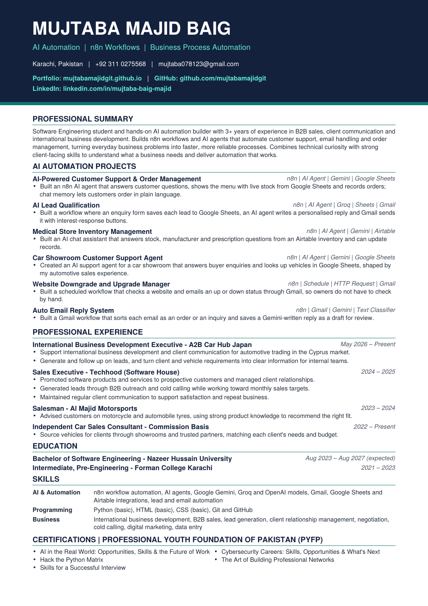

AI automation · n8n workflows · AI agents
AI workflows that take repetitive work off a business.
I build customer support agents, lead generation and follow-up, recruitment screening, appointment booking and email replies with n8n and AI, so business owners spend less time on repetitive work.
Top projects
Projects across sales, customer support, HR and operations. Each has screenshots and a short case study. All thirteen projects →
- Sales · Lead generation
Client Hunter Automation
Enter a niche and a city, and the workflow finds local businesses, checks their websites and saves AI-scored leads to Google Sheets.
- n8n
- Form trigger
- Apify
- AI analysis
- HR · Recruitment
Recruitment / CV Screening Agent
A candidate uploads a CV on a portal; AI reads it, makes a decision and saves the result to Google Sheets.
- n8n
- Webhook
- Extract from File
- AI Agent
- Customer support · Healthcare
Appointment Booking Agent (Dental Clinic)
A chat agent named Hannah checks Google Calendar and books dental appointments in a normal conversation.
- n8n
- AI Agent
- Groq
- Simple Memory
- Customer support · E-commerce
E-commerce Store Agent (Daraz)
A chat agent for an online store that looks up customers and orders and can cancel an order after the customer confirms.
- n8n
- AI Agent
- Groq
- Simple Memory
- Customer support · Orders
AI-Powered Customer Support & Order Management
A chat agent that shows the menu with live stock, answers FAQs and records orders in Google Sheets.
- n8n
- AI Agent
- Google Gemini
- Google Sheets
Currently building
New workflows are being built and tested right now.
WhatsApp channel for the restaurant agent
Connecting the restaurant support and order agent to WhatsApp, so customers can order in the app they already use.
Idea → Building → Testing → Live
More workflows for offices and organizations
Several more automations are in early development. Each one is added here with a demo as soon as it reaches testing.
Idea → Building → Testing → Live
What I can build
Every project started with a problem a business owner deals with every day.
Customer support agents
Chat agents that answer questions, take orders, book appointments and cancel orders, using your own data.
Lead generation and follow-up
Find prospects, capture each enquiry and send a personal first reply the same minute, with team alerts on Slack.
Recruitment screening
Read each CV, compare it with the role and save a decision with reasons to a sheet.
Appointment booking
A chat agent that checks your calendar and books the slot.
Content and social media
Draft posts and images from a sheet, approve in Slack, publish to LinkedIn.
Inventory and records assistants
Ask in plain language and get stock and product details from Airtable or Google Sheets.
Email automation
Sort incoming email and prepare replies for a person to review before sending.
Monitoring and alerts
Scheduled checks that email you when a website or service changes status.
Job search assistant
Find jobs, drop duplicates, score matches with AI and track them in a sheet.
Something else?
Describe the task that eats your time. I will tell you whether it can be automated.
How I work
- Understand the task. We start with the work that takes your time: who asks, what they ask and where the information lives.
- Build the workflow. I build it in n8n and connect AI models to the tools you already use, such as Gmail, Google Sheets or Airtable.
- Test with real examples. I run it with realistic cases and fix what breaks before it reaches your customers.
- Hand it over. You receive the working workflow, a short walkthrough and the workflow file.
About
I am a Bachelor of Software Engineering student at Nazeer Hussain University in Karachi, graduating in 2027. My goal is to become an entrepreneur, and AI is a good place to start: it is changing how every business works, and there is a lot to explore and build.
I want to build AI automations that solve real problems for business owners, and later for my own business too.
I came to this from sales. More than three years in B2B sales, software sales and international business development taught me how customers ask questions and where businesses lose time and orders.
Tools
- n8n workflow automation and AI agents
- Google Gemini, Groq and OpenAI models
- Gmail, Google Sheets, Google Calendar, Slack and Airtable
- Python, HTML, CSS (basic), Git and GitHub
Experience
- International Business Development Executive, A2B Car Hub Japan, May 2026 to present
- Sales Executive, Techhood, 2024 to 2025
- Salesman, Al Majid Motorsports, 2023 to 2024
Certificates of participation
- AI in the Real World: Opportunities, Skills & the Future of Work
- Hack the Python Matrix
- Cybersecurity Careers: Skills, Opportunities & What's Next
My CV on one page
Education, experience in B2B sales and international business development, my automation projects and my tools. It is the same information as this site, in a format you can forward.

Got a repetitive task eating your team's time?
Tell me what it is. I will suggest a simple automation for it and show you how it would work.
Email
mujtaba078123@gmail.com
WhatsApp
GitHub
LinkedIn
Time zone
Pakistan Standard Time (UTC+5)